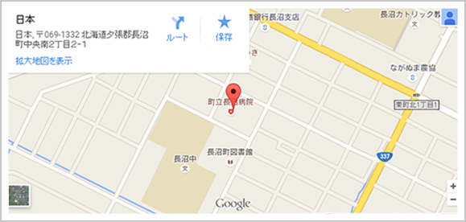

■求人情報
- 雇用形態
- パート労働者
- 雇用期間
- 雇用期間の定めあり（4ヶ月以上）平成27年7月1日～平成28年3月31日契約更新の可能性の有無あり（原則更新）
- 採用人数
- 1人
- 就業場所
- 北海道夕張郡長沼町
- 沿線
- マイカー通勤
- 可
- 仕事の内容
- 当院において病棟・外来の看護師業務※雇用期間満了後は１年毎の更新となります※週２～４日勤務（加入保険は労働条件によります）◎６月１５日必着で履歴書・紹介状を送付してください（面接は６月中旬を予定しています）
- 賃金
- 賃金形態日給9,600円～9,600円a 基本給（月額平均）又は時間額1,200円～1,200円b 定額的に支払われる手当a + b1,200円～1,200円
- 通勤手当
- 実費支給上限あり月額:55,000円
- 必要な免許・資格
- 正看護師免許
- 必要な経験等
- 不問
- 学歴
- 不問
- 年齢
- 不問
- 年齢制限の理由
- 年齢制限禁止について
- 就業形態
- パート
- 就業時間
- 1）08:30～17:15
- 休憩時間
- 60分
- 時間外
- なし
- 休日
- 他
- 週休二日
- その他毎月の勤務表による
- 年間休日数
- 加入保険
- 雇用 労災
- 入居可能住宅
- 定年制
- あり 一律 65歳
- 再雇用
- なし
- 育児休業取得実績
- 求人条件にかかる特記事項
- 備考
- ※求人票は雇用契約書ではありませんので、面接時には必ず採用時の労働条件を確認してください
■会社情報
- 産業
- 医療，福祉のうち病院
- 事業内容
- 町立病院
- 職種
- 正看護師
- 従業員数
- 企業全体:68人 うち就業場所:68人 うち女性:57人 うちパート:0人
- 所在地
- 〒069-1332長沼町中央南２丁目２番１号
- 電話番号
- 0123-88-2321
- FAX番号
- 0123-88-2586

